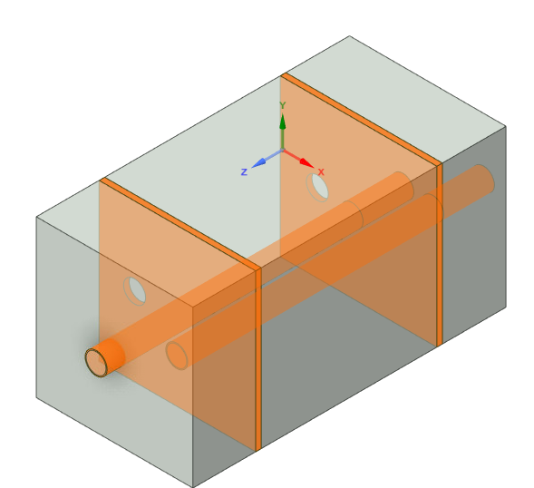

Multichamber Muffler System
Michael Raba, MSc Candidate at University of Kentucky
Created: 2025-05-07 Wed 20:55
Constructed Muffler
Main Assembly Drawing
Muffler Schematic with Annotations
This assembly schematic shows chambers, baffles, inlet/outlet alignment, and structural layout for acoustical optimization.
Schematic Variants for Muffler Subcomponents
Part 1 — Chamber and Baffle
Part 2 — Fluid domain

Part 3 — Fiberglass Absorbant (gold)
Part 4 — Showing perforates (aimed at fiberglass)

Part 5 — Final Assembly View

Simulated vs Measured Transmission Loss (0–1000 Hz)

Figure: Transmission Loss curve of the muffler between 5 Hz and 1000 Hz at 20°C.